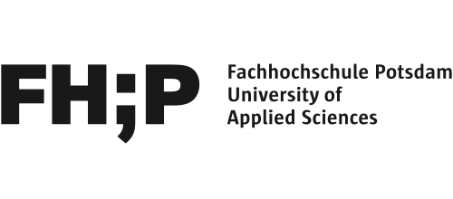
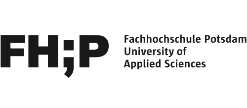

Aprendendo
alemão?

Aprender a gramática alemã pode ser muito difícil, especialmente quando alemão não é sua língua nativa. A fim de tornar a gramática mais acessível, Dieses kleine Buch ist für dich utiliza um novo sistema visual para explicar a língua alemã.

A aparência do texto e dos símbolos tornam importantes aspectos gramaticais da língua alemã visíveis. Assim fica mais fácil para você os perceber, entender e memorizar.
Esse sistema visual é utilizado no livro inteiro para explicar as diferentes estruturas gramaticais. Essa consistência visual contribui para um processo de aprendizagem contínuo, pois te ajuda a reconhecer e comparar estruturas parecidas e a relembrar aquilo que você já aprendeu.

Verbo
regular
Verbo
irregular


A gramática é dividida em quatro capítulos: classes gramaticais (Wortarten), declinação (Deklination), comparação (Steigerung) e conjugação (Konjugation). Cada página explica uma estrutura específica e fornece diversos exemplos daquela estrutura. O livro pode ser utilizado tanto para aprender novos temas quanto para revisar conteúdos já vistos.
Cópias do livro Dieses kleine Buch ist für dich estão à venda em nossa loja online!
Juntamente com outros indicados e vencedores do DESIGNPREIS BRANDENBURG 2021, Dieses kleine Buch ist für dich será exibido na Berlin Design Week 2022. A exposição acontecerá de 12 a 18 de maio no LIVING BERLIN.
Saiba mais >
A nova edição do livro Dieses kleine Buch ist für dich foi publicado em maio e cópias impressas estão disponíveis para encomenda. Julia Kühne, professora de alemão como língua estrangeira, revisou a nova edição e contribuiu com muitas dicas didáticas.
Saiba mais >
Dieses kleine Buch ist für dich recebeu o prêmio German Design Award Winner 2022 na categoria
Excelente Design de Comunicação.
Saiba mais >
Dieses kleine Buch ist für dich recebeu o prêmio Designpreis Brandenburg 2021 na categoria jovens profissionais.
Saiba mais >
Video (em alemão) >
A primeira edição do livro foi produzida em parceria com o departamento internacional da Universidade de Ciências Aplicadas de Potsdam (University of Applied Sciences Potsdam) e financiada pelo DAAD e o Ministério de Relações Exteriores do governo alemão. As 500 cópias foram distribuídas gratuitamente para estudantes internacionais da universidade.
Dieses kleine Buch ist für dich foi publicado em parceria com a Universidade de Ciências Aplicadas de Potsdam (University of Applied Sciences Potsdam) com uma licença CC BY-NC-ND 4.0 a fim de compartilhar conhecimento de forma gratuita e acessível. O PDF do livro pode ser baixado gratuitamente, mas é proibida a sua comercialização ou modificação.
Bárbara Avila Vissirini apresentou o projeto A Visual System for Grammar Instruction in
Foreign Language Learning na Conferência Europeia de Aprendizagem de Línguas 2020.
Saiba mais >
Bárbara Avila Vissirini desenvolveu em parceria com o grupo de pesquisa UCLAB da Universidade de Ciências Aplicadas de Potsdam
um sistema visual que torna aspectos gramaticais da língua alemã visíveis. O foco do sistema é tornar o idioma mais acessível, especialmente para quem aprende alemão como língua estrangeira.
Saiba mais >
Ganhador na categoria Excelente Design de Comunicação
Ganhador na categoria Jovens Profissionais
Bárbara Avila Vissirini dedicou sua pesquisa de mestrado à representação visual de estruturas gramaticais em livros didáticos. Ela se perguntou como um apoio visual consistente poderia auxiliar no processo de aprendizagem de falantes não nativos. Em sua pesquisa, ela investigou em detalhe como variáveis visuais, como cor, estilos tipográficos e sublinhados, por exemplo, são usadas atualmente por livros didáticos para ensinar alemão como língua estrangeira.
Baseada em uma análise das variáveis visuais disponíveis e os aspectos mais importantes da língua alemã para estrangeiros, Bárbara desenvolveu um sistema de suporte visual para o ensino da gramática. Ela completou seu mestrado em 2019 e sua tese Visuals for Language recebeu o prêmio do departamento de design como melhor tese de mestrado. A tese foi supervisionada pela professora de design editorial Franziska Morlok, e pelo professor de visualização de informação Dr. Marian Dörk.
Após sua graduação, Bárbara juntou-se ao grupo de pesquisa UCLAB da Universidade de Ciências Aplicadas de Potsdam (FH Potsdam) como pesquisadora associada, onde continuou a desenvolver o sistema visual criado em sua tese de mestrado. Em parceria com o departamento internacional da universidade ela escreveu o livro Dieses kleine Buch ist für dich.
Prof. Dr. Marian Dörk
Professor de visualização de informação
Prof. Franziska Morlok
Professora de design editorial
Karin Schmidt
Diretora do departamento internacional da FH Potsdam e professora de alemão
Desenvolvido em parceria
 
